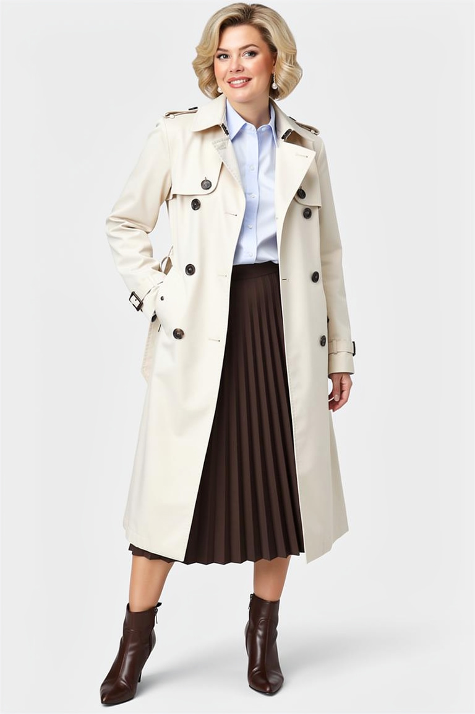
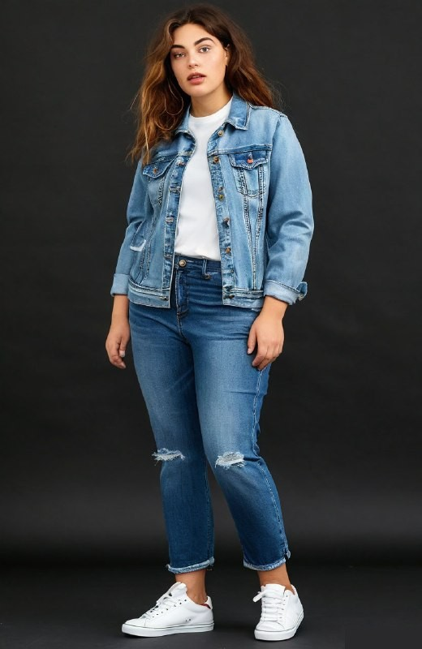
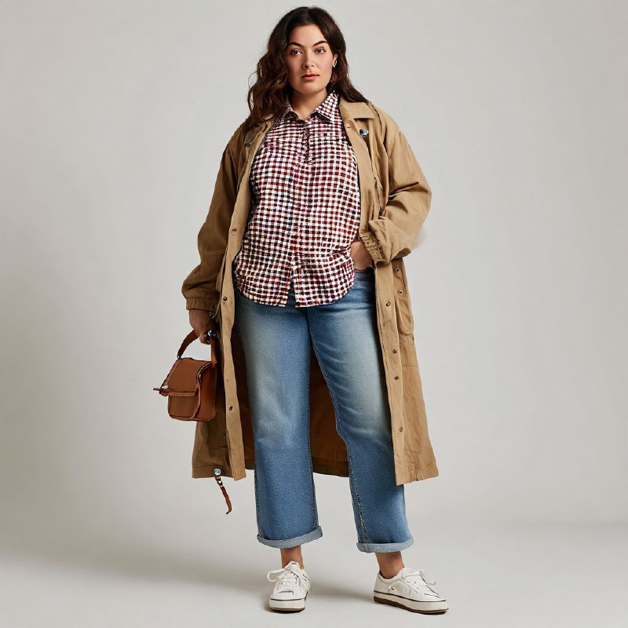
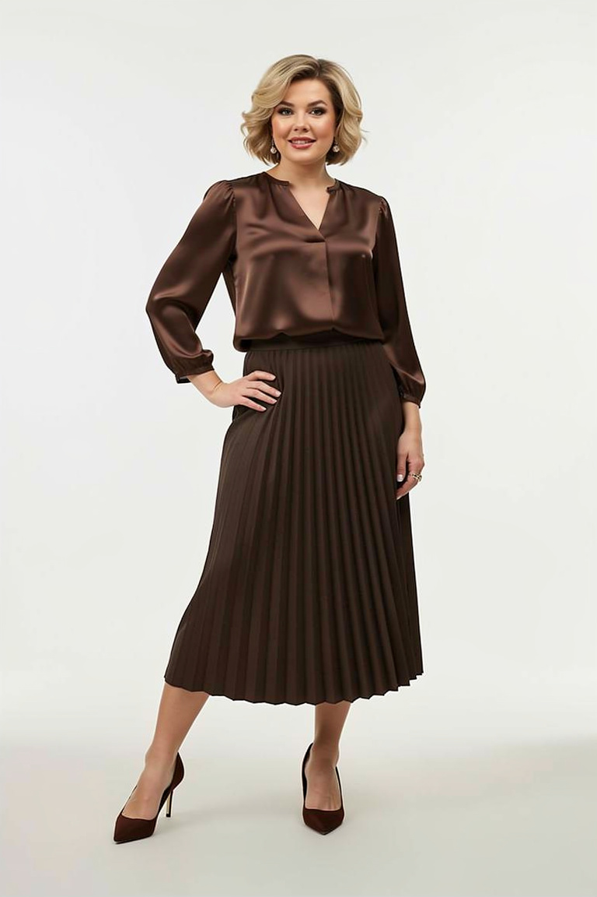
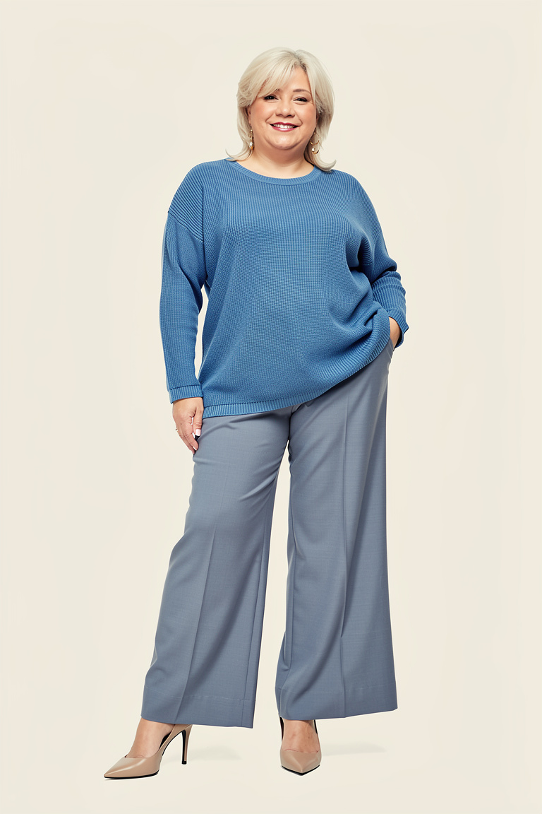

Образы из того, что уже есть
Как носить вещи, которые висят в шкафу: готовые сочетания, цвета и частые ошибки.

С чем носить бежевый тренч: 6 готовых образов
Джинсы, юбка, брюки, платье — что надеть под плащ и какую обувь выбрать.

С чем носить джинсовую куртку: 6 образов на каждый день
Футболка, платье, юбка, светлые брюки — и как не промахнуться с оттенком денима.

С чем носить клетчатую рубашку: 6 образов на осень и весну
Как носить рубашку в клетку, чтобы образ выглядел собранно, а не по-дачному.

С чем носить плиссированную юбку: 6 образов и 3 правила
Блуза, водолазка, куртка, пальто — и три правила, чтобы складки не прибавляли объёма.

С чем носить широкие брюки: 6 образов и как подобрать длину
Свитер, рубашка, пиджак, пальто — и как не потеряться в широком силуэте.